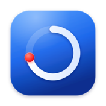

Cue
A light, native menu bar calendar for macOS. Cue shows your next meeting, gets you into the call in one click, and puts a large reminder on screen when a meeting starts.
It reads your calendar straight from Google Calendar or macOS Calendar. There's no Cue server: your calendar goes only between your Mac and Google.